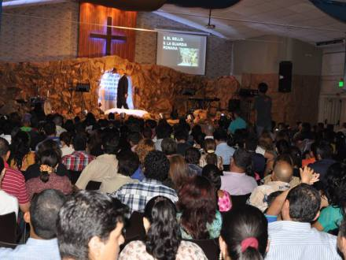
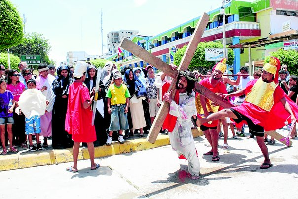
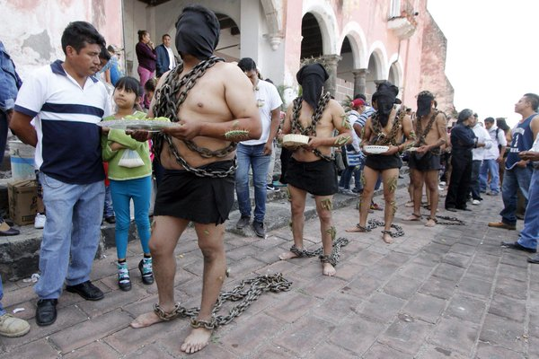
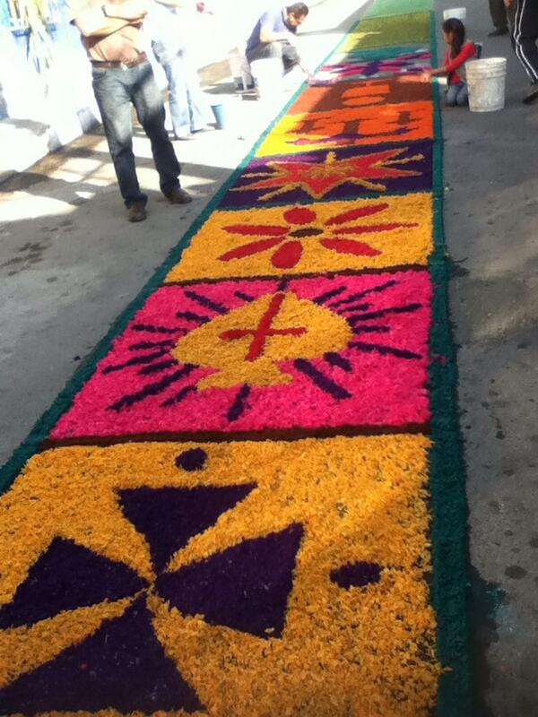
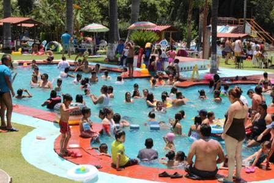
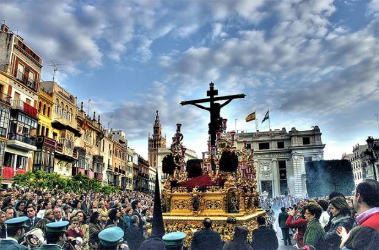
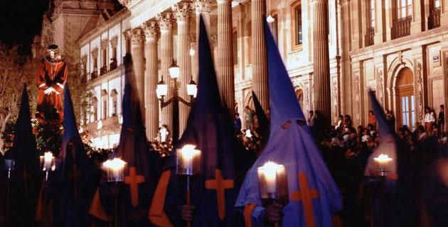

Semana Santa En México


La Semana Santa es el momento litúrgico más intenso de todo el año. Sin embargo, para muchos católicos se ha convertido sólo en una ocasión de descanso y diversión. Se olvidan de lo esencial: esta semana la debemos dedicar a la oración y la reflexión en los misterios de la Pasión y Muerte de Jesús para aprovechar todas las gracias que esto nos trae.
Para vivir la Semana Santa, debemos darle a Dios el primer lugar y participar en toda la riqueza de las celebraciones propias de este tiempo litúrgico.

A la Semana Santa se le llamaba en un principio “La Gran Semana”. Ahora se le llama Semana Santa o Semana Mayor y a sus días se les dice días santos. Esta semana comienza con el Domingo de Ramos y termina con el Domingo de Pascua.
Lo importante de este tiempo no es el recordar con tristeza lo que Cristo padeció, sino entender por qué murió y resucitó. Es celebrar y revivir su entrega a la muerte por amor a nosotros y el poder de su Resurrección, que es primicia de la nuestra.
La Semana Santa fue la última semana de Cristo en la tierra. Su Resurrección nos recuerda que los hombres fuimos creados para vivir eternamente junto a Dios.
Durante la Semana Santa, el católico cumple con diversos actos, como: procesiones, escenificación del drama de la muerte y pasión de Cristo. Los penitentes se someten a duras cargas como símbolo de su auto sacrificio y, en el día Viernes Santo, los fieles deben de guardar ayuno y abstenerse de comer carne.
 "TESTIGOS DE JEHOVA"
Para los testigos de Jehová la Semana Santa comienza el 14 de abril, o 14 de Nisán, y comprende desde la puesta de sol hasta la próxima.
De acuerdo con su tradición, la única acción que Jesús mandó a conmemorar en esta fecha es la última cena; por esto, la comunidad se reúne en el Salón del Reino para recordar esta acción, reflexionar sobre ella y el significado de la muerte y resurrección de Jesús, como rey mas no como Dios todopoderoso.
 "MORMONES"
"MORMONES"
La Semana Santa de los mormónes inicia desde el Lunes Santo, y como suelen hacer muy habitualmente durante muchas semanas del año, se reúnen en lo que llaman la “noche del hogar” para recordar pasajes de la Biblia protestante y, sobre todo, de sus libros sagrados. Son momentos de estar en familia, de compartir, y recordar cómo Jesús, que era un hombre según ellos, sólo un hombre, se hizo Dios también, otro dios, por sus propias fuerzas y comportamiento, según ellos afirman, y esto mismo es lo que ellos también quieren hacer, convertirse en dioses y regentar el gobierno de algunos sistemas solares del universo.

"CATOLICOS"
La Semana Mayor para los católicos es la época en la que se recuerda y celebra los hechos más relevantes en la vida de Jesús de Nazaret (la Pasión, Muerte y Resurrección), comenzando con el llamado Domingo de Ramos y finalizando el Domingo de Resurrección o también llamado de Pascua.
Tiene lugar después de la Cuaresma, el ciclo de cuarenta días que abarca desde el Miércoles de Ceniza hasta el Jueves Santo. Concretamente, la celebración comienza el domingo de Ramos y finaliza el Sábado Santo, aunque en algunos lugares se adelanta al viernes anterior (el de Dolores) y se prolonga hasta el Domingo de Resurrección.
Durante la temporada vacacional de Semana Santa que se lleva a cabo en el municipio deAtlixco, el alcalde Ricardo Camacho Corripio dio a conocer las tradiciones de fe que distinguen a la entidad que, aunado a los diversos atractivos que la región ofrece, permitirá atraer más de 80 mil visitantes en estos días
Cabe precisar que en la “Procesión de los Engrillados” los participantes se caracterizan por vestir de luto y portar pesadas cadenas de aproximadamente 60 kilos, además de ponerse espinas en el cuerpo. Ellos recorren las principales calle de la ciudad y tienen una preparación, tanto espiritual como física de dos meses. Se realizará también el viernes 6 de abril.

Las principales calles de este municipio situado a unos 150 kilómetros por carretera de la capital mexicana, se cubren con alfombras decorativas elaboradas con serrín de colores en un recorrido de cinco kilómetros que comienza en el Exconvento de San Francisco.

Atlixco inició la celebración de la semana santa con la inauguración del tradicional tapete floral, que con poco más de 42 mil plantas cubre una superficie de mil 200 metros cuadrados con inversión de 382 mil pesos, para el disfrute de pobladores y visitantes.

Sabado es celebrado en balnearios, rios, etc. Para celebrar la resurreccion de Cristo.
Por sexto año consecutivo, un tapete monumental de flores fue inaugurado en el zócalo de Atlixco como parte de los atractivos para Semana Santa, tiempo en el que el municipio espera recibir 74 mil visitantes.
Para la elaboración del tapete se usaron aproximadamente 42 mil plantas con más de 120 mil flores, entre ellas violas, colios, mosaico verde y lenguas de pájaro. Además, por primera vez se instalaron dos mariposas.

La celebración de Semana Santa es para los poblanos una de las conmemoracioLa celebración de Semana Santa es para los poblanos una de las conmemoraciones más importantes del año cristiano; durante estos días aquellas personas que profesan alguna de las diferentes confesiones de la fe cristiana acuden a las iglesias más emblemáticas de Puebla para recordar la Pasión, Muerte y Resurrección de Jesús de Nazaret.
Una de los actos mas significativos durante la semana santa es la tradicional Procesión de Viernes santo, misma que este 2016 cumple 25 años y que es considerada de las mas grandes del país. La Procesión de Viernes Santo, tiene como objetivo ser un encuentro de reflexión y renovación espiritual con el Señor, en su veinticinco edición, las cinco imágenes que recorren las principales calles del Centro Histórico de Puebla son consideradas entre las más representativas de Puebla, simbolizan este acontecimiento solemne de Fe, donde se contemplan con devoción la pasión y muerte de Jesucristo.
En Iztapalapa tiene lugar una ceremonia, fiesta y representación de la Pasión, que no responde ni a una narración sacra, ni a un teatro tradicional: es una expresión de múltiples aportaciones que se funde en una particular sincretización.
Los episodios más importantes tienen lugar el Domingo de Ramos con la Procesión y la Bendición de las Palmas; el Jueves Santo en el Jardín Cuitláhuac, y el Viernes Santo con la secuencia de la sentencia, los azotes, la coronación de espinas y el Vía Crucis que culmnina en el Cerro de la Estrella con la crucifixión. Al conocerse los días en que va a caer la Semana Mayor, comienzan los preparativos y se selecciona a los protagonistas del drama, quienes inician los ensayos desde enero.

La Procesión del Silencio de San Luis Potosí es un evento anual que conmemora la pasión y muerte de Cristo y aNuestra Señora de la Soledad. Ocurre en la noche del Viernes Santo, empezando en el Templo del Carmen, de donde es originario, y el recorrido sigue a través de las calles del centro histórico de la ciudad de San Luis Potosí. Durante el evento se encuentran los sonidos de tambores y cornetas, pero ningún participante o espectador habla, ameritando su nombre. Es una de las celebraciones de Semana Santa más importante de México y fue declarada parte del patrimonio cultural del estado de San Luis Potosí en el 2013.
La procesión tiene lugar en Viernes Santo, en el centro histórico de la ciudad de San Luis Potosí, al rededor de iglesias y edificios de la época virreinal.4 Iluminada con cirios, las calles tienen un ambiente de la calle de la amargura y aunque miles de espectadores bordean las calles, nadie va a hablar durante las horas de la procesión, lo que le atribuye su nombre.
 Llenos de entusiasmo; o la colorida generosidad del “Día de la Samaritana”, con el obsequio de aguas frescas en templos, escuelas, oficinas, negocios, etc.
Semana Santa, el Pueblo Mágico de Taxco, al sur de Guerrero, es uno de los primeros sitios que vienen a la mente. El arraigo de las fiestas de la Semana Mayor inició, LUNES Se efectúa la Procesión de las Ánimas durante la noche y es acaso uno de los momentos más impactantes de la fiestas de la Semana Mayor, sin mencionar la solemnidad con que los participantes –encruzados, flagelantes y ánimas- llevan a cabo su papel en las procesiones.
Llenos de entusiasmo; o la colorida generosidad del “Día de la Samaritana”, con el obsequio de aguas frescas en templos, escuelas, oficinas, negocios, etc.
Semana Santa, el Pueblo Mágico de Taxco, al sur de Guerrero, es uno de los primeros sitios que vienen a la mente. El arraigo de las fiestas de la Semana Mayor inició, LUNES Se efectúa la Procesión de las Ánimas durante la noche y es acaso uno de los momentos más impactantes de la fiestas de la Semana Mayor, sin mencionar la solemnidad con que los participantes –encruzados, flagelantes y ánimas- llevan a cabo su papel en las procesiones.
JUEVES Una vez más, el atrio del Templo de Santa Prisca es el escenario de uno de los pasajes de esta historia: Jesús en el Huerto de Getsemaní
VIERNES Es el día más importante de las fiestas de Semana Santa por la serie de eventos que se llevan a cabo en distintos puntos de Taxco. Desde muy temprano, a las 6 de la mañana, los eventos inician con el Sermón de la Flagelación de Jesús; a las 10 horas, la procesión de Jesús al calvario y en la Plaza Borda, se escenifican las tres caídas.
SABADO
Los habitantes del Pueblo Mágico de Taxco guardan silencio durante el día en señal de luto, pero es en la noche, a las cero horas, cuando se lleva a cabo la misa de Resurrección, se queman los Judas y se regalan palmas benditas en señal de júbilo.
Dentro de la gama de festejos religiosos para los Oaxaqueños la cuaresma y la Semana Santa reviste gran significado.
El Lunes Santo se celebra con gran respeto en la Villa de Zaachila con una serie de actividades costumbristas relacionadas con la Semana Mayor, el Martes Santo con la Festividad del Señor de las tres caídas en el barrio de Xochimilco , el miércoles santo hay exhibiciones de los estandartes y relicarios de las diferentes cofradías y relicarios de los diversos barrios de la ciudad de Oaxaca, el Jueves Santo se realiza después de las seis de la tarde la Visita de Los Siete Templos, en donde los altares representan la última cena de Jesús con sus apóstoles y el Viernes Santo se realiza la Procesión del Silencio en donde participan las diversas cofradías de la ciudad de Oaxaca.
En el Estado de Oaxaca la Semana Santa muestra tintes diversos: desde el respeto y solemnidad con que los oaxaqueños acuden a los templos a tomar ceniza y el recogimiento con el que los católicos manifiestan su luto durante esta semana, hasta la alegría de los “Viernes del Llano” que los jóvenes, celebran en la ciudad capital.